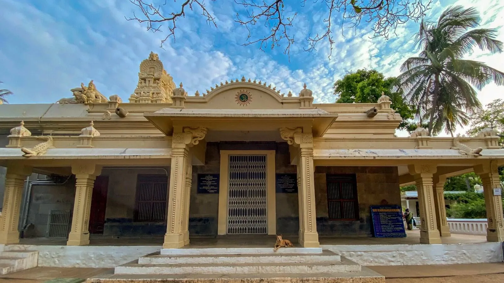
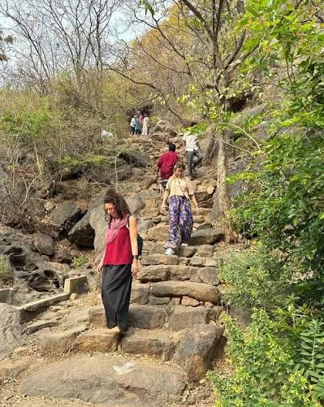
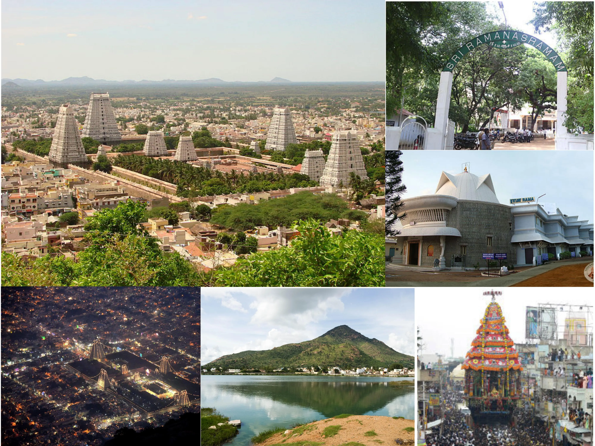
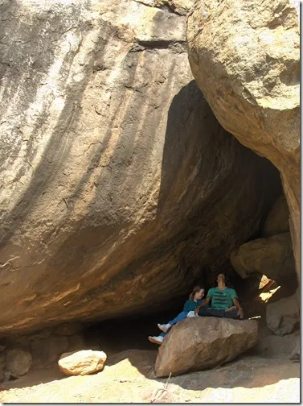
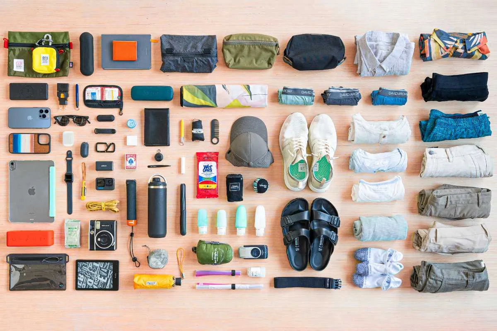
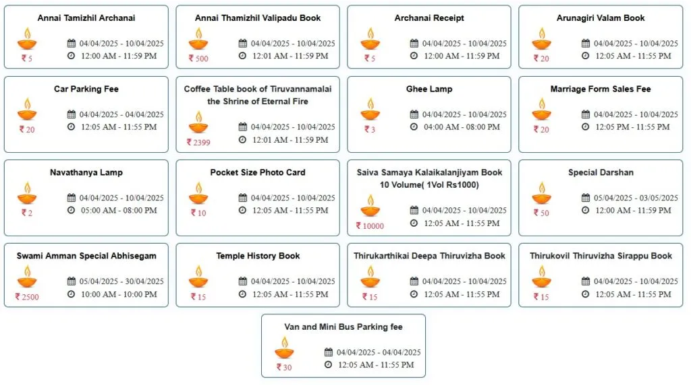

Latest Guides & Articles
Essential reading for your next visit.
The Ultimate Guide to Girivalam
Everything you need to know about circumambulating the sacred Arunachala hill, including routes, timing, and tips.

What to Expect at Sri Ramana Ashram
A visitor's guide to Sri Ramanasramam, including daily schedules, dining, meditation halls, and etiquette.
Visiting the Arunachaleswarar Temple
Navigate one of the largest temple complexes in India. Learn about darshan timings, architecture, and rituals.
How to Travel from Chennai to Tiruvannamalai
The complete transport guide comparing buses, trains, and private taxis for your journey from Chennai.

Best Time of Year to Visit Tiruvannamalai
A month-by-month breakdown of weather, festivals, and crowd levels to help you plan the perfect trip.

Top 5 Places to Eat in Tiruvannamalai
Discover the best vegetarian restaurants, cafes, and organic food spots near Ramana Ashram and the Temple.
The Perfect 2-Day Tiruvannamalai Itinerary
Make the most of your weekend trip with this balanced spiritual and sightseeing guide.
Ashram Etiquette: Dos and Don'ts
Essential rules, dress codes, and behavioral guidelines for a respectful visit to the ashrams.
Budget vs Premium Rooms: What to Expect
A transparent breakdown of costs, amenities, and what you actually get for your money in Tiruvannamalai.
Tips for Traveling to Tiruvannamalai with Family
How to navigate the crowds, find safe accommodation, and ensure a peaceful trip for the whole family.

The Meditation Caves of Arunachala
A guide to the sacred Virupaksha & Skandashram caves where Sri Ramana Maharshi lived.

What to Pack for Tiruvannamalai
An essential packing list for temple visits, ashram life, and local weather.
The Ultimate Guide to Karthigai Deepam
How to experience the grand festival of lights in Tiruvannamalai safely and comfortably.
Solo Travel Safety in Tiruvannamalai
Tips for navigating the town, temples, and ashrams as a solo traveler.
Yoga & Meditation Centers
Discover the best places for spiritual courses and silent retreats in Tiruvannamalai.

Arunachaleswarar Darshan Booking
A practical guide to special darshan, timings, and avoiding the queues.
Auto Rickshaws & Scooty Rentals
How to get around Tiruvannamalai easily and fairly.
Weekend Getaways from Tiruvannamalai
The best nearby destinations for nature, history, and beaches.

Shopping in Tiruvannamalai
A guide to the best souvenirs, organic clothes, and spiritual books.

Digital Nomad Guide
Everything you need to know about WiFi, cafes, and long-term stays.
Pournami Girivalam Guide
Navigating the crowds, best timings, and essential safety tips for the Full Moon circumambulation.
A Foreigner's Guide to Tiruvannamalai
Essential information for international visitors regarding culture, connectivity, and long-term stays.
Tiruvannamalai Weather & Seasons
Understanding the climate to help you choose the perfect month for your pilgrimage or retreat.
Getting Around Tiruvannamalai
Everything you need to know about navigating the town, from share-autos to peaceful walking routes.
Tiruvannamalai Vegetarian Food Guide
From traditional South Indian thalis to organic satvik cafes for spiritual seekers.
Pournami Girivalam Dates
The complete schedule for Full Moon circumambulation of the holy Arunachala Hill.
The 1-Day Tiruvannamalai Itinerary
How to make the most of a quick day trip from Chennai or Bangalore.
Tiruvannamalai on a Budget
How to experience the spiritual capital of the South without breaking the bank.
The Mysteries of Arunachala
Why a singular mountain in South India has drawn seekers and sages for millennia.
Ramana Maharshi for Beginners
An introduction to the profound simplicity of Self-Inquiry and the question: "Who am I?"
TOP 10
Places to Visit
Top 10 Places to Visit
The ultimate tourist guide to the most spiritual and scenic locations in town.
FREE FOOD
Annadanam Timings
Annadanam (Free Food) Timings
Where and when to find the sacred offering of free meals.
ASHRAMS
Beyond Ramana
Other Major Ashrams
Explore Seshadri Swamigal and Yogi Ramsuratkumar Ashrams.
TRAINS
Railway Guide
Railway Station & Train Guide
Train timings, routes, and tips for arriving by rail.
NEARBY
Parvathamalai Trek
Nearby Attractions
Venture out for the thrilling Parvathamalai trek and Sathanur Dam.
TRAVEL
To Pondicherry
Travel to Pondicherry & Vellore
How to plan your onward journey from Tiruvannamalai.
MAP
Girivalam Route
Girivalam Route & Ashta Lingams
63
Nayanmars
The 63 Nayanmars List
Discover the complete list and history of the 63 great Tamil Shaiva saints.
AGNI LINGAM
Spiritual Significance
Spiritual Significance of Arunachala
Why Tiruvannamalai and Mount Arunachala hold immense spiritual significance.
CAVES
Meditation Caves
Meditation Caves of Arunachala
A guide to visiting and meditating in Virupaksha Cave and Skandasramam.
YOGA
Centers & Ashrams
Yoga Centers & Ashrams
Discover the best places to learn and practice Yoga in Tiruvannamalai.
WHO AM I?
Self-Inquiry
How to Practice Self-Inquiry
A beginner's guide to Sri Ramana Maharshi's Self-Inquiry meditation.
SILENCE
Mauna Retreats
Silence and Solitude
Discover the best places for silence (Mauna) and solitude in Tiruvannamalai.
YOGIS
Why They Flock Here
Why Yogis Flock to Tiruvannamalai
Explore the energetic reasons why seekers worldwide flock to Tiruvannamalai.
DIVINE
Girivalam Connection
Connecting with God Through Girivalam
How the 14km walk is a profound inner meditation to connect with God.
AWARENESS
Ramana's Philosophy
The Power of Self-Inquiry
A deep dive into how the question 'Who Am I?' leads to divine realization.
RETREATS
Meditation Courses
Meditation Retreats
Our roundup of the best structured meditation experiences in town.
INNER PEACE
Spiritual Capital
Finding Peace
A reflection on how the atmosphere of Tiruvannamalai instantly brings inner peace.